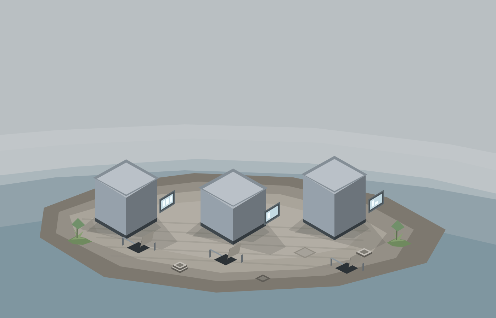
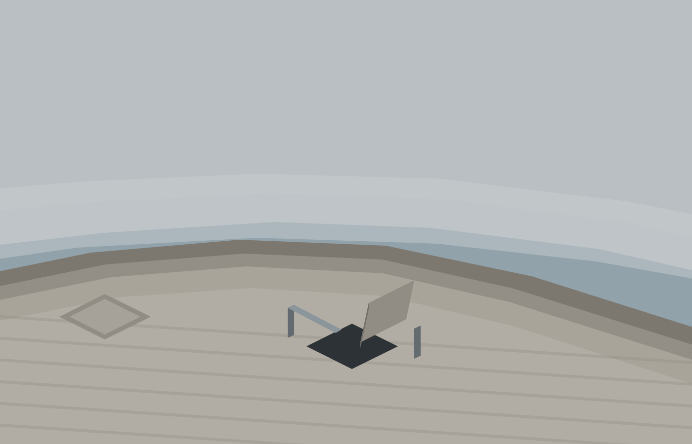
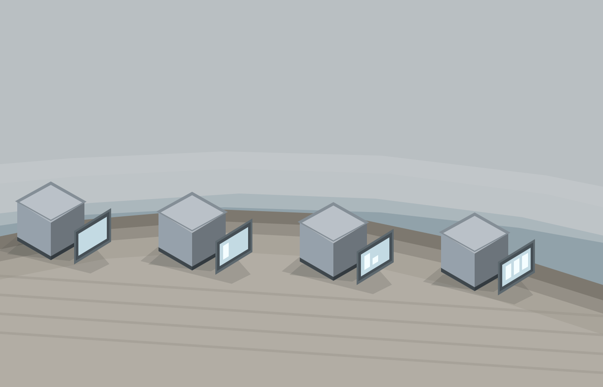
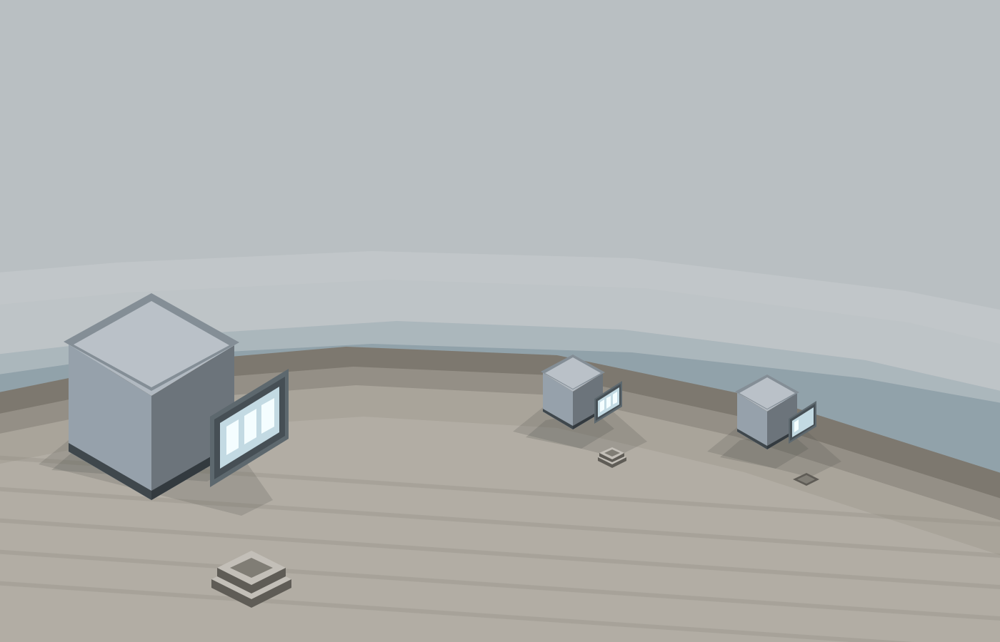
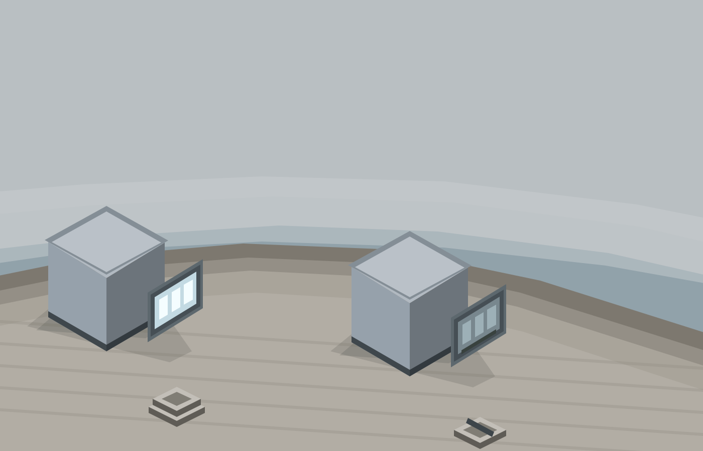
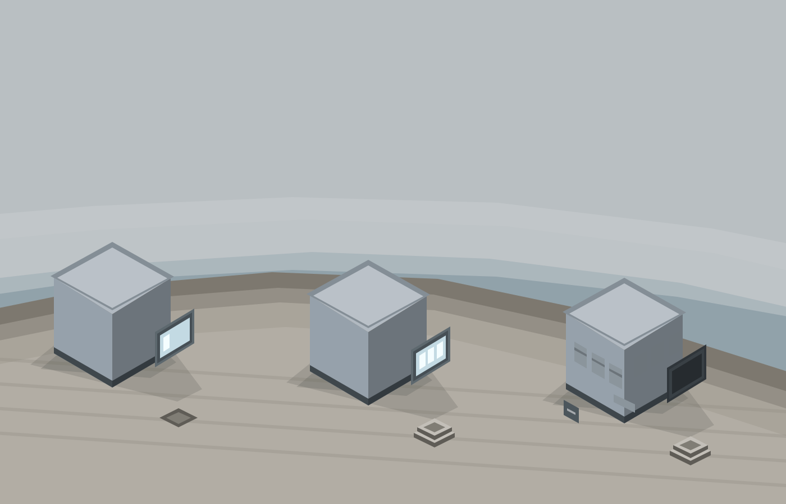

Intrusion Crisis Reference Plates (era nine)
Flat-shaded SVG references over era nine's engineered paving: a dimmed flat late afternoon, the floor open in a dozen places, and every reading carried by a countable segment ladder plus a ground collar.
01 Wide Master

02 Lifted Cover And Barrier

03 Status Panel Four Readings

04 Two Distances

05 Stale Reading

06 Building States
